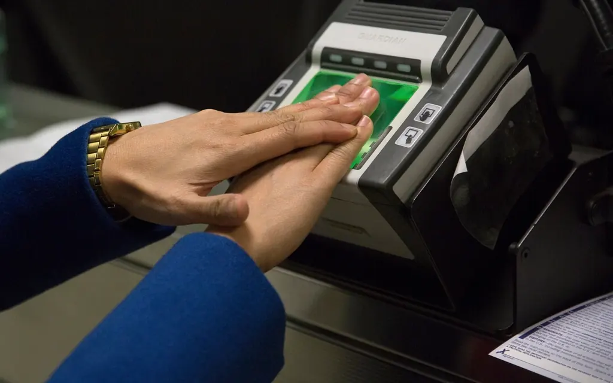
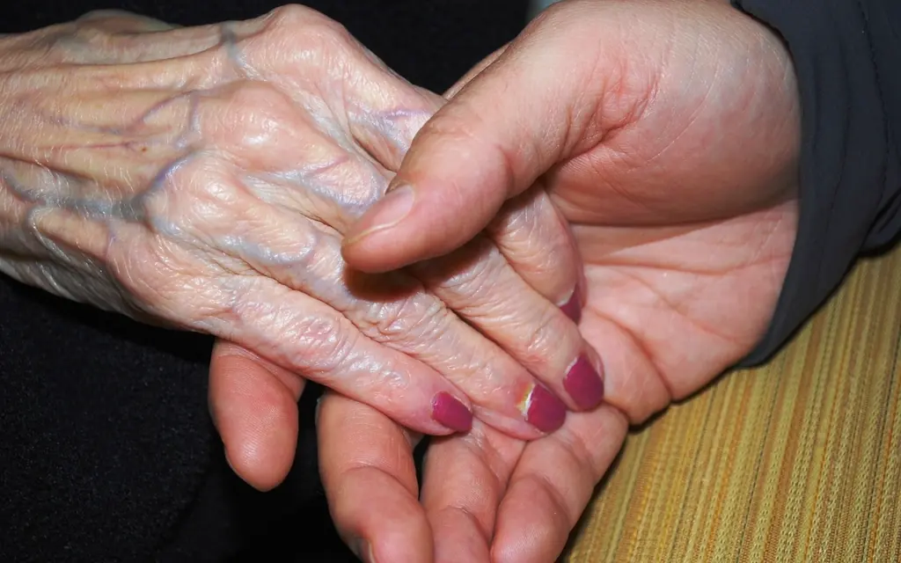

추천 칼럼
영주권 카드를 분실했다면: 재발급(I-90)과 임시 증명(ADIT)
임시 영주권 증명(ADIT)은 이제 이민국 방문 없이 우편으로도 받을 수 있습니다. 재발급 절차와 함께 정리했습니다.
글 읽기Expert Column
실무 가이드, Q&A 해설, 승인 사례, 변호사의 시선. 6개월 뒤에도 도움이 되는 글을 모읍니다.
추천 칼럼
임시 영주권 증명(ADIT)은 이제 이민국 방문 없이 우편으로도 받을 수 있습니다. 재발급 절차와 함께 정리했습니다.
글 읽기총 20개 글최신순
과거 학생 신분 관련 허위 진술 문제로 거절됐던 영주권. 시민권자 배우자의 극심한 어려움을 입증해 최종 승인됐습니다.
임시 영주권 증명(ADIT)은 이제 이민국 방문 없이 우편으로도 받을 수 있습니다. 재발급 절차와 함께 정리했습니다.
해외 대사관의 공적부조 질문지로 살펴보는 인터뷰 준비. I-864와 세금보고서만으로는 부족할 수 있습니다.
 PERSPECTIVE
PERSPECTIVE이민법 집행 방식에 대해 20년 동안 현장에서 느낀 생각을 적었습니다.
결혼 2년이 되기 전에 받은 조건부 영주권. I-751 승인 전에 시민권을 신청할 수 있을까요?
취업이민 대기자가 126만 명을 넘었다는 통계와 함께, 지금 취업이민을 시작할 때 따져 볼 점을 정리했습니다.
오랫동안 함께 진행해 온 케이스가 10년 만에 영주권 승인으로 마무리됐습니다.
시민권 신청자가 특히 조심해야 할 유권자 등록과 투표 기록 문제를 정리했습니다.
부부가 함께 살지 않는다면 무엇을 준비해야 할까요? 최근 승인된 배우자 초청 케이스로 설명합니다.
오랜 취업이민과 가족초청 진행 끝에, 8월 21일 I-601 웨이버가 최종 승인됐습니다.
USCIS가 불완전한 신청서를 추가 서류 요청(RFE) 없이 바로 거절할 수 있도록 심사 기준을 강화했습니다.

PRACTICAL GUIDE프로디(Prodee) 등 과거 학교 등록 기록이 있는 분들이 글로벌 엔트리를 신청할 때 주의할 점입니다.
비이민 체류 제도가 바뀌는 지금, 유학생이 취업이민을 준비할 때 유의할 점을 정리했습니다.
최근 I-485 케이스에서 I-693 신체검사 관련 RFE가 잇따랐습니다. 지정 의사에게 받아야 하는 이유를 설명합니다.
새 정책 메모(PM-602-0199)가 나온 뒤 직접 다녀온 영주권 인터뷰 현장 이야기입니다.
미국 안에서 내는 영주권 신청에 관한 USCIS 정책 메모가 앞으로 어떤 영향을 줄지 전망했습니다.
ESTA로 입국해 약 3개월 뒤 시민권자와 결혼한 의뢰인의 배우자 초청이 빠르게 승인됐습니다.
긴 심사 끝에 프리미엄 처리(Premium Processing)로 승인된 국가이익면제(NIW) 사례입니다.

CASE RESULT3월 11일 승인된 I-601 웨이버 사례입니다. 전날 인터뷰에 함께 다녀왔습니다.
과거 프로디(학교) 등록 기록이 있던 시민권자 배우자의 영주권 승인 사례입니다.
조건에 맞는 글이 없습니다. 검색어나 분류를 바꿔 보세요.
개별 사건의 결과는 사실관계와 법적 상황에 따라 다르며, 과거의 결과가 향후 유사한 사건의 결과를 보장하지 않습니다. 사례는 의뢰인 동의를 받아 식별 정보를 지운 뒤 싣습니다.
시안 메모 블로그에서 ‘미국 이민 소식’에 있던 승인 사례도 여기 ‘승인 사례’로 모았습니다. 분류 규칙은 하나입니다. 6개월 뒤에도 유효한 글이면 칼럼, 아니면 소식.
사실관계를 들어 보고 가능한 방법과 위험을 정직하게 말씀드립니다. 한국에 계셔도 전화·화상·카카오톡으로 상담할 수 있습니다.